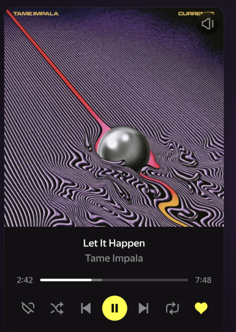

Плеер Яндекс Музыки
на панели браузера
Не нужно искать вкладку с музыкой среди двадцати открытых. Обложка, перемотка, лайк и громкость — по клику на значок. Плюс горячие клавиши, отметка ИИ-треков и история в Last.fm.

Одна кнопка вместо вкладки
Окно расширения перестраивается под то, что играет: музыка, «Моя волна», подкаст, аудиокнига, нейромузыка или радио. Кнопки не врут — то, чего сейчас сделать нельзя, просто погашено.
Окно расширения
Обложка, трек и артист с переходом на страницу. Перемотка, пауза, следующий/предыдущий, лайк, перемешивание, повтор, громкость и скорость — в подкастах и книгах.
Горячие клавиши
Четырнадцать команд: воспроизведение, переходы, перемотка на 10 секунд, лайк, громкость. Медиаклавиши работают сразу, остальные назначаются в настройках Chrome — можно сделать глобальными.
Уведомление о треке
Карточка с обложкой при каждой смене трека — видно, что заиграло, не переключаясь на вкладку. Можно выключить или показывать только по горячей клавише.
Файл для стримеров
Пишет текущий трек в текстовый файл и кладёт рядом обложку — готовые источники «Текст» и «Изображение» для OBS. Папка выбирается один раз, наружу ничего не уходит.
Метка ИИ-музыки
Показывает, что играет сгенерированный трек, по открытой базе slopless.art — отдельно для трека и артиста. Можно пропускать такие треки автоматически, функция выключена по умолчанию.
История в Last.fm
Прослушанное уходит в вашу историю — считается сыгранное время, а не позиция. Сеть пропала — запись подождёт в очереди и уйдёт позже.
Говорит с движком плеера, а не с вёрсткой
Музыка отдаёт состояние и управление через внутренний движок Sonata — теми же объектами, что и собственный интерфейс сервиса. Расширение обращается к ним напрямую.
Поэтому оно одинаково работает во всех режимах и не ломается, когда витрина переставит кнопку местами.
- Плейлисты, «Моя волна», подкасты, книги и сказки
- Нейромузыка и генеративный поток
- FM-радио — свой стор, тот же подход
Окно под каждый режим
От плейлиста и радио до настроек, ИИ-меток, файла для OBS и Last.fm.


Наружу — только то, что вы включили
Личные данные не собираются и не хранятся. Каждое разрешение — под конкретную функцию, необязательные запрашиваются отдельно и снимаются вместе с выключением.
Настройки расширения хранятся в браузере и не покидают его.
Карточка «сейчас играет» при смене трека и по горячей клавише.
Чтение состояния плеера и передача команд — основная функция расширения.
Проверка трека и артиста по открытой базе ИИ-музыки. Передаётся только идентификатор, доступ запрашивается отдельно.
Отправка прослушанного в аккаунт Last.fm после того, как вы сами его подключите.
Выбирается вами через системный диалог. Файлы остаются на компьютере.
Управляйте музыкой, не отвлекаясь на вкладку
Бесплатно, без рекламы и регистрации. Работает на music.yandex.ru / .ua / .by / .kz и radio.yandex.*